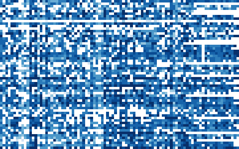

GroupLens Research, University of Minnesota (Harper & Konstan, 2015). 610명 · 9,742편 · 별점 100,836개 (0.5~5점)

| userId | title | genres | rating |
|---|---|---|---|
| 276 | Independence Day (a.k.a. ID4) (1996) | Action|Adventure|Sci-Fi|Thriller | 5 |
| 599 | School Ties (1992) | Drama | 2.5 |
| 483 | Alien³ (a.k.a. Alien 3) (1992) | Action|Horror|Sci-Fi|Thriller | 2.5 |
| 202 | Good Morning, Vietnam (1987) | Comedy|Drama|War | 3 |
| 274 | Gonzo: The Life and Work of Dr. Hunter S. Thompson (2008) | Documentary | 4 |
| 458 | Net, The (1995) | Action|Crime|Thriller | 5 |
| 열 | 종류 | 빈칸 | 고유값 수 | 범위 · 대표값 |
|---|---|---|---|---|
| userId | 숫자 | 0 | 610 | 1 ~ 610 (평균 326.1) |
| movieId | 숫자 | 0 | 9724 | 1 ~ 193,609 (평균 19,435.3) |
| rating | 숫자 | 0 | 10 | 0.5 ~ 5 (평균 3.502) |
| timestamp | 숫자 | 0 | 85,043 | 828,124,615 ~ 1,537,799,250 (평균 1,205,946,087.4) |
| title | 글자 · 범주 | 0 | 9719 | 가장 흔한 값: Forrest Gump (1994) (0.3%) |
| genres | 글자 · 범주 | 0 | 951 | 가장 흔한 값: Comedy (7.1%) |
4점이 가장 많다. 0.5점 단위
대부분의 영화는 별점이 몇 개뿐이다 (긴 꼬리)
| ① 한 행 | (사용자, 영화) 쌍 하나 |
| ② 입력 X | 사용자 번호 · 영화 번호 (+ 장르) |
| ③ 출력 y | 별점 (0.5~5) |
| ④ 평가지표 | RMSE (별 몇 개만큼 틀리나) |
| ⑤ 기준선 | 전체 평균 별점 |
문제를 정할 때 처음 채워 보는 칸들입니다. 여기서 끝이 아니라, 시험 데이터를 어떻게 나눌지 · 틀렸을 때 손해가 얼마인지 · 예측 시점에 정말 알 수 있는 값인지 같은 칸을 더 붙일수록 좋은 문제가 됩니다.
baseline (global mean 3.50): RMSE 1.051 mean + user bias + movie bias : RMSE 0.878
누가, 왜, 어떻게 만든 데이터인지 직접 확인해 보세요.
인턴 · 산학협력 · 프로젝트 주제를 고를 때 참고하세요 (일반적인 예시).